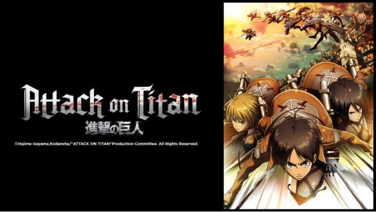
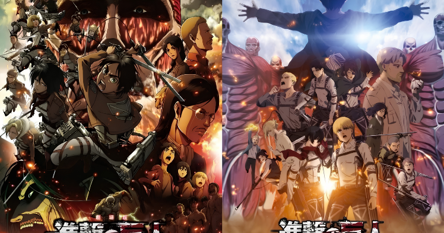
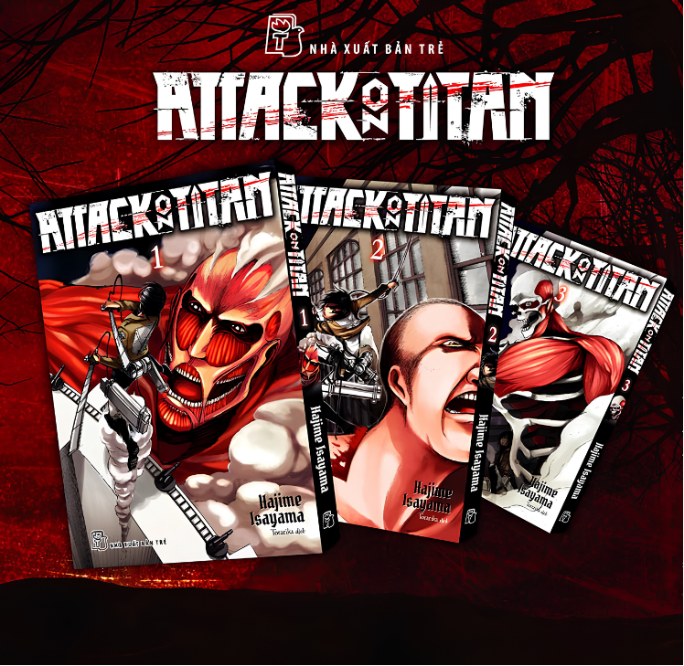

Tưởng rằng chỉ cần soi từng khung tranh là có thể tìm ra mọi bí mật trong Attack on Titan? Chưa chắc! Đôi khi, manh mối thú vị lại xuất hiện trong chính những cuộc phỏng vấn của tác giả. Hajime Isayama từng chia sẻ về cách ông sử dụng cảm hứng từ lịch sử và những điểm tương đồng với thế giới thực để xây dựng bối cảnh truyện. Một lời chia sẻ ngoài lề, một chi tiết về quá trình sáng tác, liệu chúng có thể khiến chúng ta nhìn thế giới của Eren và những người bạn bằng một góc nhìn hoàn toàn khác?

1. Khi tác giả tiết lộ nguồn cảm hứng phía sau thế giới truyện
Trong cuộc phỏng vấn với Crunchyroll năm 2023, Hajime Isayama đã chia sẻ về ảnh hưởng của các sự kiện lịch sử đối với cách ông xây dựng thế giới Attack on Titan. Ông giải thích rằng việc tạo ra những điểm tương đồng với lịch sử thực tế giúp bối cảnh trở nên thuyết phục hơn mà không cần phải giải thích mọi thứ trực tiếp.
Một ví dụ đáng chú ý là cách ông xây dựng bản đồ thế giới trong truyện: có những yếu tố được biến đổi so với bản đồ thế giới thực, tạo cảm giác quen thuộc nhưng vẫn khác biệt. Isayama cũng đề cập đến những nét tương đồng giữa người Eldia và Marley với các nhóm dân tộc, đế chế trong lịch sử châu Âu.
Điều này mở ra một hướng đọc thú vị: thế giới trong Attack on Titan không nhất thiết phải được hiểu như một phép ẩn dụ tương ứng một-một với lịch sử ngoài đời. Thay vào đó, những điểm tương đồng có thể giúp độc giả nhận ra cách quyền lực, xung đột và ký ức tập thể định hình một xã hội.

2. Một lời chia sẻ có thể thay đổi cách chúng ta đọc truyện như thế nào?
Hãy nhớ lại cách câu chuyện xây dựng mối quan hệ giữa Paradis và Marley. Ở những giai đoạn đầu, người đọc chủ yếu tiếp cận thế giới qua góc nhìn của những nhân vật sống trong tường thành. Những điều họ tin về thế giới bên ngoài định hình cách họ nhìn nhận kẻ thù và chính bản thân mình.
Khi phạm vi câu chuyện mở rộng, độc giả nhận ra rằng những niềm tin ban đầu không phản ánh toàn bộ sự thật. Lịch sử, tuyên truyền, nỗi sợ và những ký ức được truyền từ thế hệ này sang thế hệ khác đều có thể ảnh hưởng đến cách các cộng đồng nhìn nhận nhau.
Đặt chia sẻ của Isayama bên cạnh những diễn biến này, chúng ta có thêm một lăng kính để đọc tác phẩm: thay vì chỉ hỏi ai đúng, ai sai, hãy thử tìm hiểu những điều đã khiến mỗi bên tin rằng mình đúng.
Tuy nhiên, đây là một hướng diễn giải dựa trên chủ đề của truyện và chia sẻ của tác giả, không phải bằng chứng cho thấy mọi tình tiết đều được xây dựng để tương ứng với một sự kiện lịch sử cụ thể.
3. Hint từ tác giả khác gì hint do fan suy luận?
Đây là điểm mà người thích đào hint cần đặc biệt chú ý.
Một phát ngôn trực tiếp của tác giả về cảm hứng sáng tác là thông tin có nguồn để kiểm chứng. Nhưng việc dùng phát ngôn đó để giải thích một tình tiết cụ thể vẫn có thể chỉ là suy luận của độc giả.
Chẳng hạn, khi Isayama nói về cảm hứng lịch sử trong cách xây dựng thế giới, chúng ta có cơ sở để nghiên cứu các lớp nghĩa liên quan đến lịch sử và xung đột tập thể. Nhưng không thể từ đó kết luận rằng một nhân vật nhất định được xây dựng hoàn toàn dựa trên một nhân vật lịch sử ngoài đời nếu tác giả chưa xác nhận điều ấy.

Vì vậy, Góc Comic đề xuất phân biệt ba cấp độ:
- Tác giả xác nhận: Thông tin được nêu trực tiếp trong phỏng vấn hoặc tài liệu đáng tin cậy.
- Truyện gợi ý: Chi tiết trong tác phẩm có thể hỗ trợ một cách diễn giải.
- Fan suy luận: Giả thuyết thú vị nhưng chưa có đủ bằng chứng để xem là sự thật.
Ba cấp độ này giúp việc soi hint vừa hấp dẫn vừa tránh biến những giả thuyết lan truyền trên mạng thành thông tin chính thức.
4. Đọc lại Attack on Titan với một câu hỏi mới
Sau khi biết thêm về cảm hứng lịch sử trong quá trình sáng tác, hãy thử đọc lại những chương tập trung vào Marley và Eldia. Thay vì chỉ chú ý đến các trận chiến, hãy quan sát cách nhân vật nói về lịch sử, cách họ mô tả đối phương và những thông tin mà mỗi bên được tiếp cận.
Có chi tiết nào cho thấy một nhân vật đang nhìn thế giới qua những định kiến được truyền lại? Có sự kiện nào thay đổi ý nghĩa khi chúng ta biết thêm góc nhìn của bên còn lại?
Đừng vội tìm một đáp án duy nhất. Hãy đối chiếu giả thuyết với những gì thực sự xuất hiện trong truyện, đồng thời phân biệt rõ điều tác giả từng xác nhận với cách bạn diễn giải tác phẩm.
Bởi đôi khi, điều thú vị nhất không phải là tác giả đã vô tình tiết lộ bao nhiêu bí mật, mà là một chia sẻ ngoài đời có thể giúp chúng ta phát hiện thêm bao nhiêu lớp nghĩa trong câu chuyện.
Phòng tám truyện của Góc Comic: Nếu tác giả đã lấy cảm hứng từ lịch sử để tạo nên một thế giới hư cấu, liệu những chi tiết tưởng như xa lạ trong truyện có đang phản chiếu những vấn đề vẫn tồn tại ngoài đời? Hãy tìm bằng chứng trong tác phẩm trước khi đưa ra kết luận của riêng bạn.